The Drum Tower's Red Doors
The Drum Tower dominates Yinchuan's skyline like a declaration: this city remembers itself. Standing at the center of the old city, the tower rises in traditional brick with upturned eaves tiled in faded gold, its massive red doors drawing the eye with an intensity that seems almost defiant against the pale Ningxia sky. A neon sign bearing the city's name glows red above it, as if confirming what the architecture already knows: Yinchuan exists at the threshold between centuries.
Walking the old city streets, you encounter this tension constantly. The Drum Tower and Bell Tower are not museum pieces sealed off from daily life. They pulse with activity. Locals cross the plaza on motorcycles and bicycles. Vendors set up shop in the surrounding alleys. The towers anchor neighborhoods that function as living communities, not heritage zones, and this distinction matters profoundly for understanding what Yinchuan has chosen to become.
Just south stands the Bell Tower, its architecture nearly identical to the Drum Tower's, another brick fortress with layered eaves and bright red doors scaled for humans and motorcycles alike. The two towers once formed a commercial and civic center; they still do. Stand between them in late afternoon light and you see why: the proportions speak of a city that knew what it valued, and the way contemporary Yinchuan flows around them suggests the city has not forgotten.

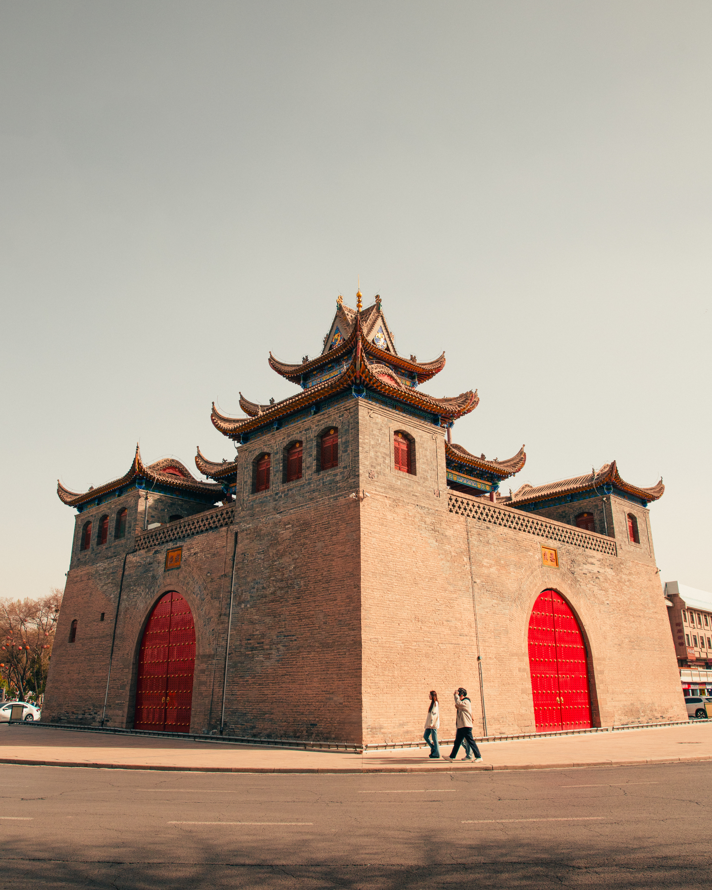
The Street, Written in Signs and Cycles
The most honest picture of a city emerges from its transit. In Yinchuan's neighborhoods near Zhongshan Park and beyond, this means red three-wheeled cargo vehicles, bicycles, pedestrians, and the kind of commerce that happens on sidewalks. A vendor sets up in the morning, sells through the day, packs away by evening. The visual language is one of efficiency and adaptation rather than spectacle. This is Yinchuan at work—not performing for cameras but performing for itself.
The Pedestrian Street refines this energy into a designed space without losing its character. Here, ornate wooden shopfronts display traditional architecture in concentrated form. Eaves curve and layer. Signage uses classical proportions. The street functions precisely as Yinchuan's residents need it to function: a place to shop, eat, rest, move through the city. Families sit on benches. Students gather in clusters. The architecture frames daily life rather than competing with it. What makes this street work is that it never forgot its primary purpose: to be useful.
Walking this street at different hours reveals its rhythm. Morning brings shopkeepers opening shutters and vendors arranging goods. Midday sees a rush of foot traffic—lunch crowds, shoppers, workers on break. Evening softens the intensity; the vendors close, the lights come on, the pace slows. This is not a street designed to be beautiful when empty. Its beauty emerges from use, from the way crowds move through it, from the conversation of commerce and community happening at ground level.
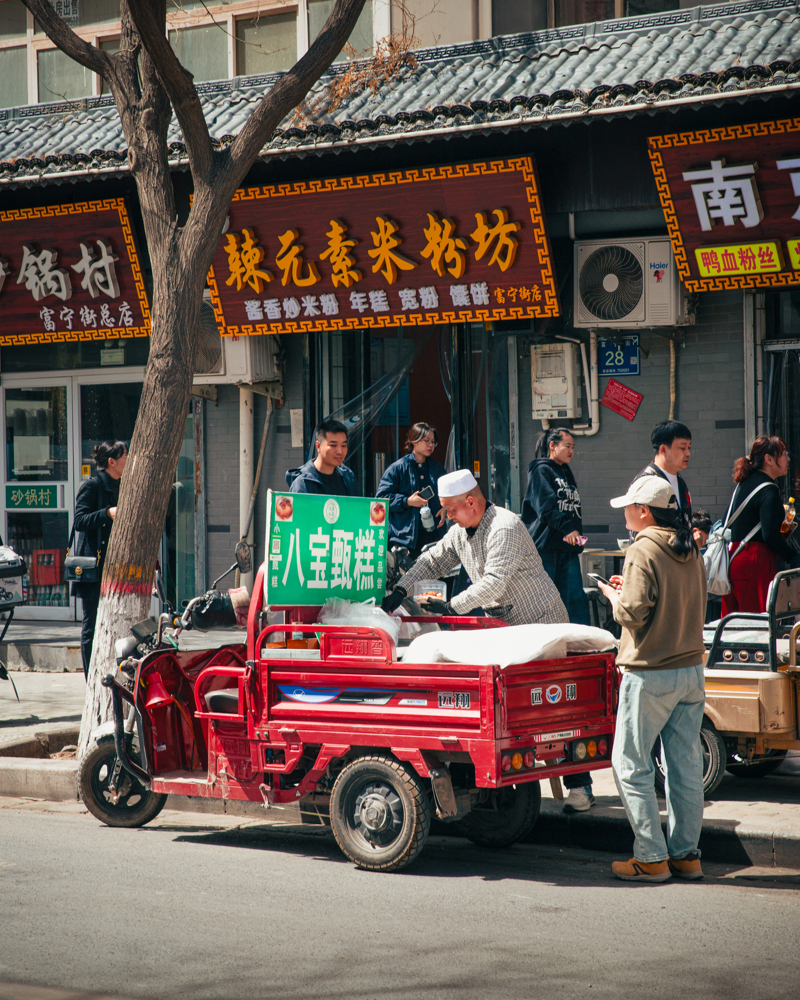
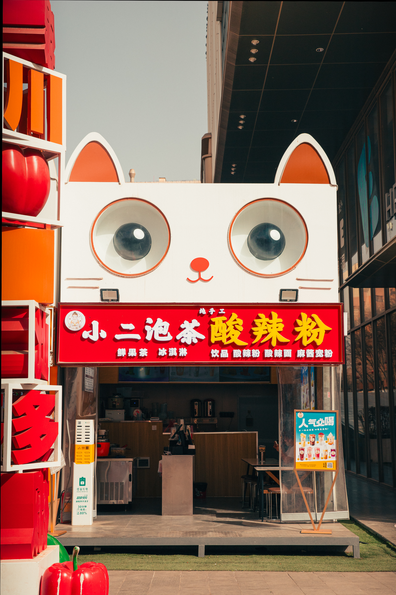
The Centigan Temple Pagoda and the Sacred Landscape
North of downtown, the Centigan Temple Pagoda rises in terracotta brick against clear sky. Seven stories tall, its balconied levels circle the tapering structure. A green-tiled spire crowns it. Below, the temple's main sanctuary displays the ornamental density typical of Chinese religious architecture: painted beams, decorative railings, colored tiles arranged in patterns that reward close observation.
The pagoda serves as a pivot point between Yinchuan's urban center and the landscape that surrounds it. From this vantage, you can trace sight lines back to the city's core while simultaneously looking outward toward the Helan Mountains and the desert that frames Ningxia Province. The temple complex doesn't retreat from modernity; it coexists with it, a statement about what endures.
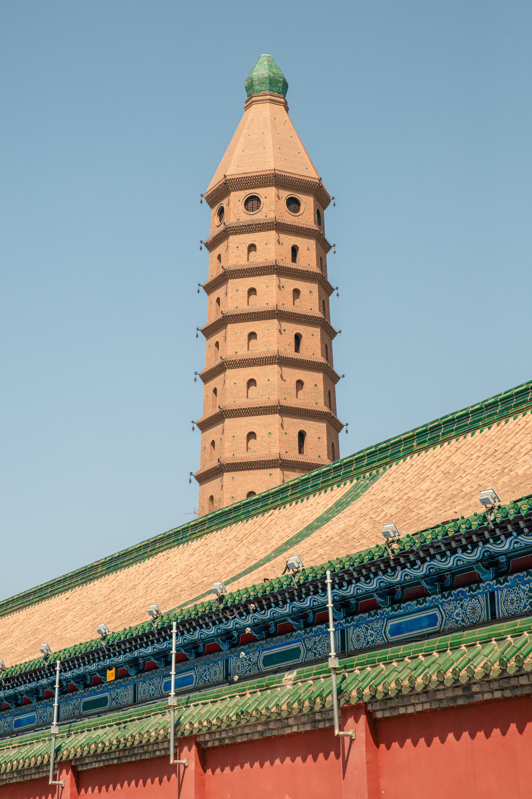
The Western Xia: History Written in Ruins
Twenty kilometers west of the city, the Western Xia Tombs and Museum represent a different historical register entirely. The tombs sit in the Helan foothills, a series of earthen mounds visible from considerable distance. The landscape itself becomes archaeological: these mounds were burial grounds for a kingdom that ruled the region from the 11th to 13th centuries, lost its war with the Mongols, and vanished so completely from Han Chinese historical consciousness that Western scholars knew more about the Xia than the Chinese themselves.
The Western Xia Museum, constructed in contemporary brick, presents the dynasty's artifacts and history with scholarly rigor. Its minimalist design—spare walls, careful lighting, generous spacing between exhibits—allows visitors to absorb information without overwhelm. The architectural restraint paradoxically emphasizes the cultural achievement it documents. The Xia were not a footnote to Chinese history; their erasure from mainstream memory represents a particular kind of historical violence.
The landscape around the tombs reads as subtle complexity: distant mountains soft in haze, the mounds themselves modest but deliberate, scattered remains of walls and structures visible to those who know where to look. It is not a spectacular site by touristic standards. Its power emerges from geological timescale and the kind of silence that only seems quiet because your ear has learned to listen.
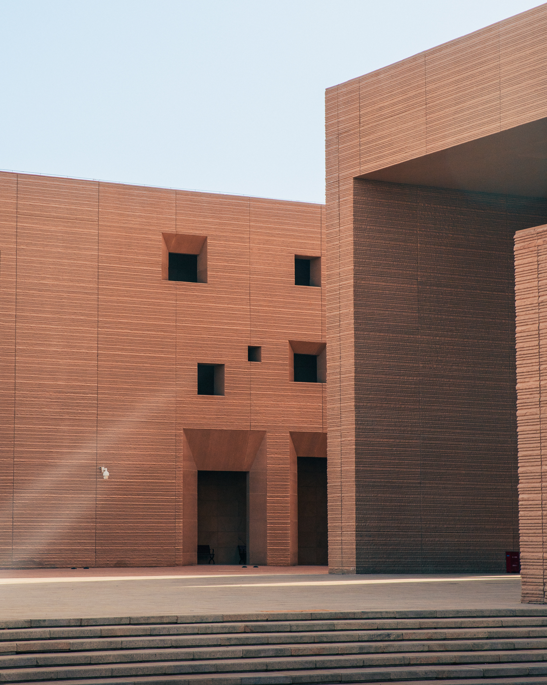
The Architecture of Arrival and Ambition
Yinchuan is rebuilding itself. The People's Auditorium announces this intent with formal clarity: a structure that appears to hover just above ground, its flying saucer-like roof suggesting both futurism and flight. The building refuses to reference traditional Chinese architecture; instead, it creates a new formal language for the city's aspirations. Stand before it and you see a city declaring: we are not bound by what came before. We are imagining forward.
This audacity extends throughout the contemporary city. Modern office towers rise with confidence. Shopping centers sprawl outward. The Ningxia Museum's brick facade presents itself as contemporary rather than historicizing. The Yinchuan Theater announces itself in curves and glass. Investment flows toward the new districts, away from the old center. The message is consistent across all these structures: Yinchuan is not a preserved city. It is a living city engaged in choosing its own future, and that future will be built.
Yet the choice does not preclude reverence for what came before. The Drum Tower and Bell Tower remain the city's visual anchors. Traditional architectural languages persist in the Pedestrian Street and scattered shophouses. Walk from the contemporary district back toward the old center and you move through architectural time—from glass and steel back to brick and timber. The pattern suggests a city attempting something difficult: building forward while remaining rooted. Not all cities manage this balance. Yinchuan seems to understand that a future without a past is just anxiety masquerading as progress.
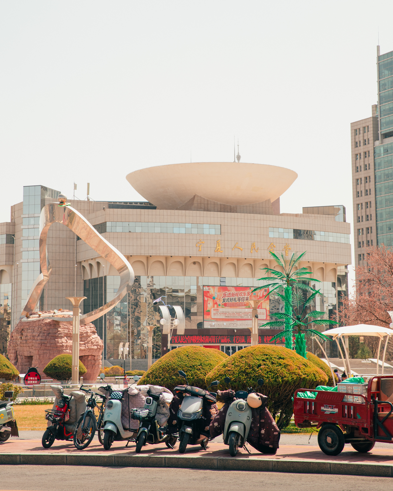
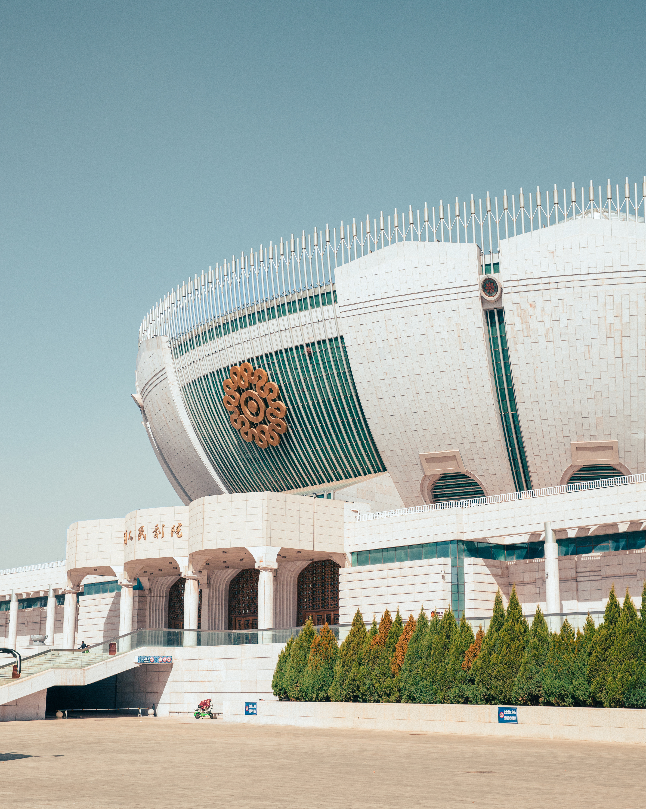
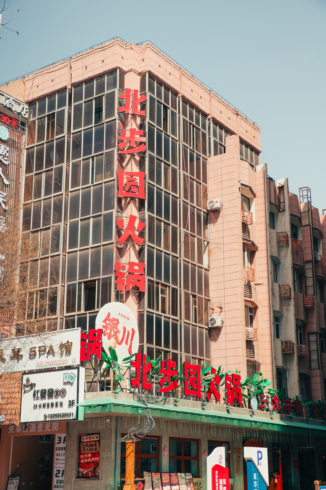
Lanshan Park and the Distant Mountains
At Lanshan Park, the Yellow River comes briefly into focus. A vast recreational field spreads toward the water; beyond lies a landscape of reeds and distant mountains. This is where Yinchuan remembers its geography: the Yellow River to the east, the Helan Mountains to the west, desert in multiple directions. The city sits in one of China's more precarious environmental zones, and the mountains loom as both beauty and constraint.
The park at sunset delivers the full emotional register. The mountains blur into haze. The light turns everything amber and gold. Families walk the paths. The scale of the landscape dominates. From here, the city's various aspirations—historical, contemporary, commercial—seem small, not insignificant, but scaled appropriately to their actual place in the world.
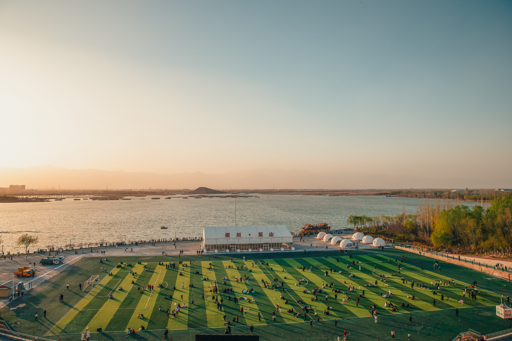
The Ningxia Museum: Preservation and Narrative
The Ningxia Museum stands as a contemporary counterpoint to the historical monuments scattered throughout the city. Its brick facade, austere and purposeful, declares that a museum need not apologize for its modernity. Inside, the minimalist design—generous spacing between exhibits, careful lighting, uncluttered walls—allows artifacts to speak without mediation. Each object has room to breathe. This restraint paradoxically amplifies the significance of what's displayed.
The approach reflects a broader pattern in contemporary Chinese museology: reject the ornamental in favor of clarity, trust the viewer's intelligence, let objects maintain their dignity. Walking through these galleries, you encounter not just historical facts but a philosophy of how to honor what came before without performing nostalgia.
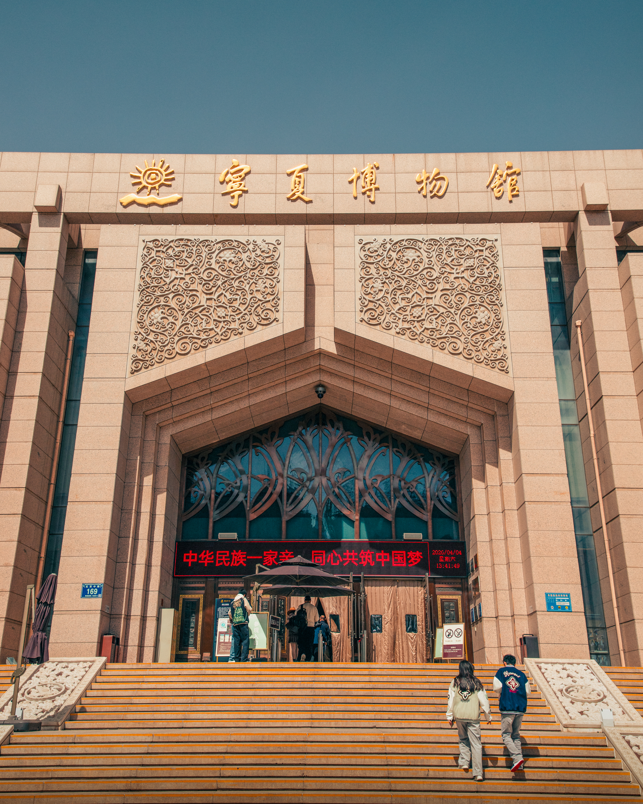
Photo Essay: Daily Observations
The streets reveal what monuments can only suggest. These images capture Yinchuan in its ordinary moments: commerce, rest, movement, the texture of a city that continues regardless of who's watching. A shopkeeper arranges goods in a window. Children play on a bench. Motorcycles and bicycles move through traffic with the choreography of habit. This is Yinchuan when it's not performing—when it's simply being.
Photography in a city like this becomes less about capturing iconic moments and more about revealing the visual rhythm of daily life. The patterns emerge slowly: the repeated gestures of vendors, the architectural repetitions that structure neighborhoods, the way light and shadow move across streets according to the seasons. What seems chaotic at first glance reveals itself as order—not imposed from above, but accumulated through repetition and habit.
The value of these photographs lies not in their individual compositions but in their collective witness. Together, they form a portrait of Yinchuan as a place where millions of individual choices and actions accumulate into the texture of urban life. The city is not what the architects built or what the authorities planned. The city is what happens when people inhabit a space over time, adapting it to their needs, making it theirs. These images are evidence of that ongoing negotiation between design and lived experience.
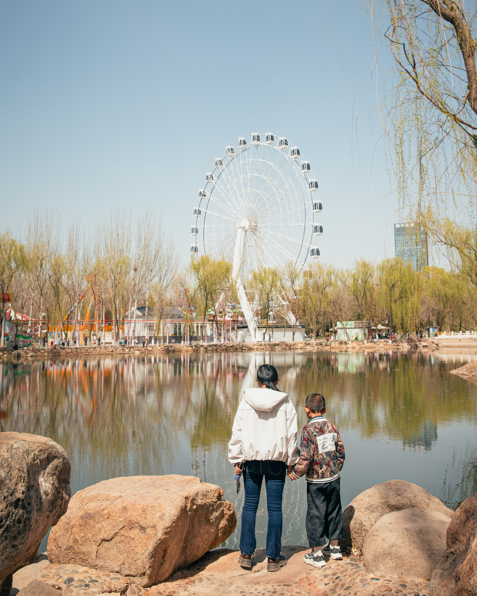
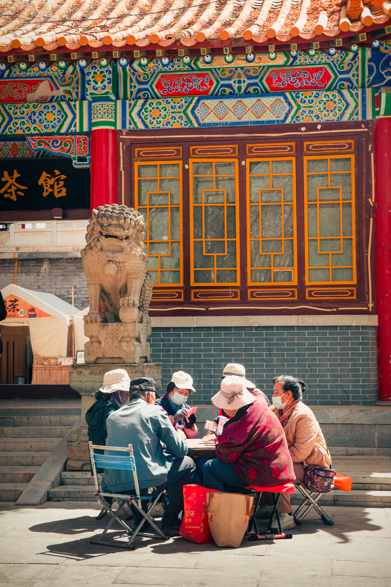